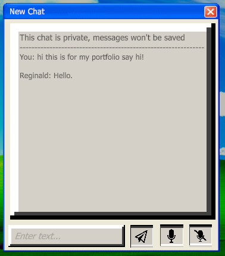

AI Interaction Pipeline
Connected speech-to-text, conversational AI, and text-to-speech in a single ordered workflow.
GAMEPLAY & AI PROGRAMMER · SOLO PROJECT
GAMEPLAY & AI PROGRAMMER · UNITY / C# · SOLO PROJECT · 1 WEEK
Scam the AI is a short conversational game about persuading a wealthy but temperamental AI character to send the player money. Players can type or speak naturally, then adapt their approach as the character reacts to their choices.
I built the project as a solo developer to explore how speech recognition, conversational AI, and text-to-speech could operate as one responsive gameplay system. The result combines multiple external services, deterministic outcome logic, and a reusable desktop-style interface.

01 / OVERVIEW
The central challenge was not simply getting an AI response into Unity. The project needed to accept two forms of input, coordinate several asynchronous services in the correct order, translate unpredictable responses into reliable game states, and return control to the player without breaking the conversational flow.
Connected speech-to-text, conversational AI, and text-to-speech in a single ordered workflow.
Supported typed messages and recorded speech while allowing players to choose their active microphone.
Defined the character’s personality, preferences, boundaries, and required outcome phrases through a reusable starting prompt.
Parsed the AI’s responses for exact phrases that triggered continued conversation, victory, or failure.
Built shared drag, open, and close behavior for the desktop-style chat, settings, and supporting windows.
Created chat controls, taskbar interactions, wallpaper selection, and configurable audio input.
02 / GAMEPLAY
The player calls the AI character while posing as a technical-support representative. Success depends on maintaining a convincing story, responding to the character’s shifting attitude, and eventually earning enough trust to trigger the win condition. If the character becomes sufficiently frustrated, the call ends in failure.
03 / SYSTEM ARCHITECTURE
Each interaction passes through a controlled sequence so that recording, transcription, response generation, outcome checks, and audio playback never compete with one another. Typed messages enter the same conversation path after bypassing transcription.
After receiving the AI response as text, the system first checks for gameplay triggers. It then requests synthesized speech and reveals the written response while the matching audio plays. Only after this sequence completes does the interface return to an input-ready state.
Read typed text or record the selected microphone.
Convert recorded speech into text when voice input is used.
Append the player’s message to the current AI conversation.
Wait for the character’s generated reply.
Check the reply for victory or failure phrases.
Convert the response text into spoken audio.
Display the text and play its audio together.
Return the interface to its input-ready state.
04 / NPC LOGIC
A custom starting prompt establishes the character’s identity, ego, interests, conversational boundaries, and the phrases used to communicate game outcomes. I iterated on this prompt so the character could respond freely while still producing results the game could interpret reliably.
Defines who the NPC is and why the player is calling.
Shapes the character’s tone, skepticism, and sensitivity.
Creates conversational openings and potential risks.
Keeps responses consistent with the game’s scenario.
“I sent the money” signals a successful conversation.
“Goodbye.” signals the end of the call.
The conversational model was configured for relatively grounded responses. Each player message was added to the same conversation so the NPC could react to earlier statements and inconsistencies.
This parser gave the project a deterministic layer around generative output. The dialogue could remain flexible, but the game still knew exactly when to continue, reward the player, or end the interaction.
05 / INTERFACE SYSTEMS
The game is presented as a simplified early-desktop environment. That familiar structure makes typing, recording speech, opening applications, and changing settings understandable without requiring a separate tutorial.
Rather than scripting every application independently, I created shared window behavior for dragging, taskbar activation, and close controls. Individual windows could then focus on their own content while retaining consistent interaction.
The chat window combines a text-entry field, a send control, voice-recording controls, and the NPC response display. Both text and speech ultimately feed the same conversation system.

The settings window reuses the same base behavior while adding wallpaper selection and an audio-input dropdown. Allowing players to choose a microphone made the speech workflow usable across different hardware configurations.

06 / ENGINEERING CHALLENGES
Speech recognition, conversation generation, and audio synthesis had to finish in a specific order. I structured the interaction as a controlled pipeline so each stage passed a complete result to the next.
Generative dialogue is flexible, but game states must be predictable. Exact response phrases created a reliable bridge between freeform conversation and win or failure events.
Speech input depends on the player’s available devices. I exposed microphone selection in the settings window so the active recording source could be configured at runtime.
I maintained a prompt-engineering document containing the complete starting prompt and a code-design document for the UI system. These references kept the AI behavior rules and interface architecture explicit while I iterated.
07 / TAKEAWAYS
Scam the AI gave me practical experience integrating several third-party services into Unity rather than treating each API as an isolated experiment. I learned to coordinate asynchronous requests, move data cleanly between systems, and design the interface around delays that are unavoidable in networked interactions.
It also reinforced the importance of wrapping unpredictable AI output in deterministic gameplay rules. The most valuable result was not simply making an NPC speak—it was building a complete interaction loop that could listen, respond, change game state, and remain understandable to the player.
LET’S WORK TOGETHER
I’m interested in gameplay, tools, AI, and technical opportunities where reusable systems improve both the player experience and the development process.